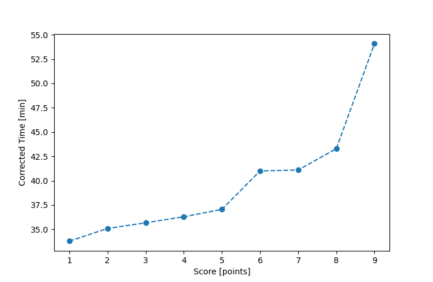

| Wind: | 2-3 (BFT) |
|---|---|
| RC: | Gail_K, Mike_K, Barry_O |
| Date: | July 22, 2018 |
| Notes: | O course M plus an I 1 lap |
| Rank / Score | Name | Boat | Input Time [mm:ss] | Input Offset [mm:ss] | Race Time [mm:ss] | Race Time [s] | Handicap | Corrected Time [s] | Corrected Time [mm:ss] |
|---|---|---|---|---|---|---|---|---|---|
| 1.0 | Ron_F | F5 | 32:38 | 00:00 | 32:38 | 1958 | 0.96600 | 2027 | 33:47 |
| 2.0 | Rod_H | LASEM | 34:08 | 00:00 | 34:08 | 2048 | 0.97300 | 2105 | 35:05 |
| 3.0 | Mike_F | SF | 35:49 | 00:00 | 35:49 | 2149 | 1.00400 | 2140 | 35:40 |
| 4.0 | David_Bu | SF | 36:26 | 00:00 | 36:26 | 2186 | 1.00400 | 2177 | 36:17 |
| 5.0 | Chris_E | SF | 37:12 | 00:00 | 37:12 | 2232 | 1.00400 | 2223 | 37:03 |
| 6.0 | Art_M | SWSX | 39:19 | 00:00 | 39:19 | 2359 | 0.95900 | 2460 | 41:00 |
| 7.0 | Nedra_F | SF | 41:16 | 00:00 | 41:16 | 2476 | 1.00400 | 2466 | 41:06 |
| 8.0 | Lewis_V | BCN | 37:39 | 00:00 | 37:39 | 2259 | 0.87000 | 2597 | 43:17 |
| 9.0 | Cody_M | SF | 54:18 | 00:00 | 54:18 | 3258 | 1.00400 | 3245 | 54:05 |

Application Notes:
All race results are unofficial
View source code at https://github.com/cessnao3/portsmouthracecalc/